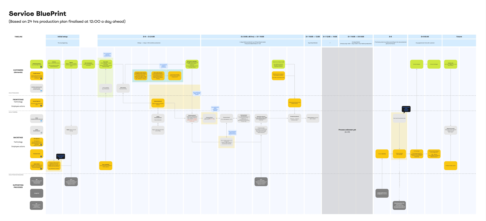
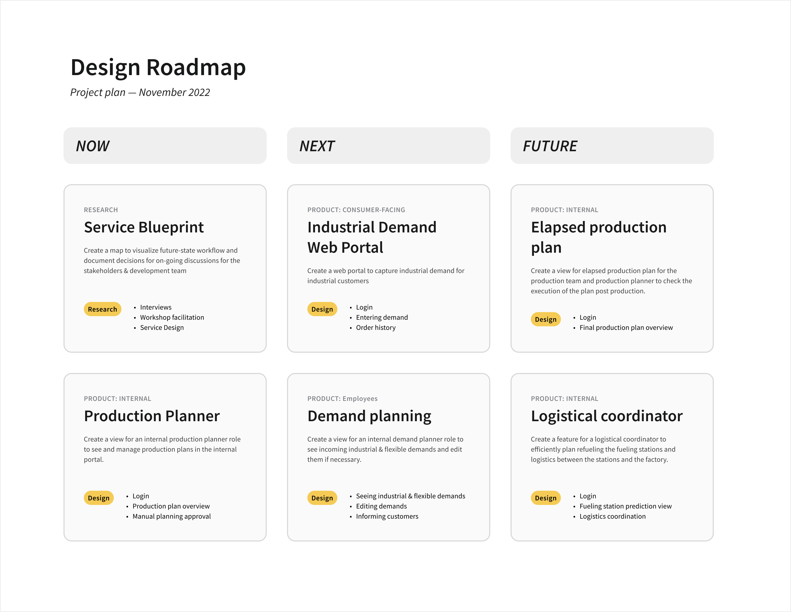

Service design:
Hydrogen Power Plant Operation
Using Service Design Methodology to develop rough ideas to clear product roadmap, leading to digital product design ensuring operational efficiency of the emergent green hydrogen power plant.
CONTRIBUTION
Service design
Workshop facilitation
UX/UI design
Product Roadmapping
SUMMARY
A client approached for 5 screens of simple interaction for hydrogen production. It quickly turned out that the context was technical and complicated, and with the client’s expectation beyond the realistic scope — each of 5 screens having to represent hydrogen ordering, order management, hydrogen production planning & management. To make the complicated requirements digestible and design a successful service for this one-of-a-kind innovative operation, I applied a various service design methodology to make multiple breakthroughs. I created a service blueprint to visualize the complex context simple which identified (feature) gaps and encouraged valuable and crucial discussions to close the gaps. This resulted in redefining MVP.
OUTCOMES
Future-state Service blueprint
• which provided a holistic picture of the end-to-end scenario
• identified many crucial gaps in the initially proposed vision (”feature ideas”)
• Re-negotiated UX/UI design scope → Better roadmapping
• Identified critical timeline for system operation
• When the algorithm needs to complete the planning
Customer & User archetypes
Development-ready product design for MVP
A product roadmap for interconnected systems
BACKGROUND
A client, building europe’s one of the first green hydrogen power plant, needed a software that will enable their client to order hydrogen and enable themselves to manage orders, plan hydrogen production, manage production and monitor (report). To make the complicated requirements digestible and design a successful service for this one-of-a-kind innovative operation, I applied a various service design methodology to make multiple breakthroughs. I created a service blueprint to visualize the complex context simple which identified (feature) gaps and encouraged valuable and crucial discussions to close the gaps. This resulted in redefining MVP.
PROCESS
Initial meetings introduced interesting challenges
Complex context
The timeline of the European energy market was closely tied to a hydrogen production. While the information was crucial to understand the timeline to design an operational system for the production, the complicated energy market timeline made the technical topic even more complex.
Enthusiastic Experts with myriads of knowledge
From the mechanics of energy market to the science of hydrogen production, it was difficult to determine valuable information that has design implications.
Non-existing users
The company being new and building their first hydrogen power plant meant that we had no existing user base. Everything needed to be imagined and defined by ourselves.
WORKSHOP
To extract valuable information that leads to design implications, I hosted a series of workshop to identify potential customer, users and their potential pain points and design a new service to support all of them.
Imagining future customers and users
Who will be the client’s customers, and how will the customers interact with the client’s internal employees? and how will they interact with the system we are to build? To answer these questions, I facilitated a workshop to define customer and internal user
- Who are the customers?
- Who are the users?
- What are their unmet needs?
Output: Personas
We drafted rough personas on-the-go in a meeting to have a structured discussion which definitely helped.
Envisioning a future-state service
To connect the loose dots to create a full picture, we also brainstormed on the future-service supporting the client’s B2B customer and internal employees and illustrated it in a form of a service blueprint.
• How will the archetypes interact with each other?
• What service can we provide to meet the customer/users’ unmet needs?
• What needs to be built?
Output: Service Blueprint
ACHIEVEMENTS
SMALL WINS
UX decision
In our conversations, the client kept using several units — Wattage, ton, kg, cubic meter, liter, etc — interchangeably. That was because electricity converts to power to certain amount of hydrogen, and pressurized hydrogen can be measured by weight but also by volume (at a certain pressure). But this was very confusing to non-technical party. so we made a decision to stick to one unit (kg) during our discussion.
Client thinks in ‘human-centric’ manner
For example, while the system’s backend is based on the 36 hour cycle optimised for the current energy market schedule, a decision was made to show a 24 hour cycle when it comes to product UIs which is more natural & intuitive for human to interpret, which also fits better with 8-hour employee work shift.
Better way of working
Service blueprint serving as a central documentation providing clarity improving discussions & alignment.
BIG WINS
New product roadmap with new priorities
Realising massive scope leading to creating a new roadmap, facilitating an agreement to readjust the project schedule and scope.
Clear understanding of the product ecosystem
Established a good understanding of the product ecosystem which consists of multiple products. Each of products were accompanied by an agreed definition and its target users.
Gaps addressing the need for a new role
Identified gaps in business requirements to create a successful product ecosystem, which resulted in a new hire (BA).
OUTCOMES
PRODUCT ROADMAP
DESIGN DELIVERABLES - MVP
UX design was delivered based on the newly agreed scope, addressing various archetypes’ needs to help them to meet their objectives.
REFLECTION
• Importance of digestible documentation / materials (e.g. Service blueprint) crucial for alignment especially in a complex business context.
• Do not take the project timeline for granted if the context isn’t well-known yet → successful Expectation management.
• Not to rush into the whole scope of research & design in 4 weeks time → Better planning for quality deliverables & team’s morale.
• Hard to access B2B client for interviews.
• I learned even more about myself how much I enjoy taking a new challenge in an unknown area and learn new things.